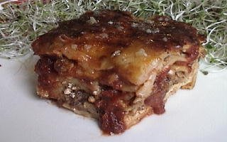

HAPPY PIG LASAGNA
SOY MEAT FILLING
- 2 CUPS ONIONS - FINELY CHOPPED
- 1/2 CUP OLIVE OIL
- 5 CLOVES GARLIC - MINCED
- 2 TWENTY FOUR oz. JARS MARINARA SAUCE
- 1 CUP WATER
- 6 SOY SAUSAGE PATTIES
- 14 SOY MEATBALLS
- 3 Tbs. OLIVE OIL (for frying)
- 1 Tbs. OREGANO
- 1/8 tsp. CAYENNE PEPPER POWDER
CHEESE FILLING
- 16 oz. RICOTTA CHEESE
- 2 CUPS MOZZARELLA CHEESE - SHREDDED
- 1/2 CUP PARMESAN OR ROMANO CHEESE - GRATED
- 1/2 CUP ORGANIC MILK
- 2 Tbs. DRIED PARSLEY, (or 1/4 cup fresh parsley - chopped)
- 2 tsp. DRIED OREGANO
- 2 CLOVES GARLIC - MINCED
- 1/2 tsp. SALT
- 1 tsp. BLACK PEPPER
NOODLES AND CHEESE TOPPING
- 8 oz. LASAGNA NOODLES (approx. 9 to 12 noodles) - COOKED AL DENTE'
- 4 CUPS MOZZARELLA CHEESE - SHREDDED
SOY MEAT FILLING
POUR THE MARINARA SAUCE INTO A MEDIUM BOWL, THEN STIR IN 1 CUP OF WATER. IN A MEDIUM SKILLET, PLACE 1/2 CUP OLIVE OIL AND ALL THE ONIONS, COOK OVER A MEDIUM HEAT UNTIL TRANSPARENT. REMOVE FROM HEAT, AND ADD MINCED GARLIC, THEN ALLOW TO COOL. FRY ALL SOY MEATS IN THE 3 Tbs. OF OLIVE OIL IN A LARGE SKILLET OVER MEDIUM-HIGH HEAT UNTIL CRISPY AND SLIGHTLY CHARRED. REMOVE FROM HEAT AND ALLOW TO COOL. IN A FOOD PROCESSOR, PLACE 1/2 OF THE ONIONS WITH THE OIL, AND 1/2 OF THE SOY MEAT (broken into pieces), AND 1-1/4 CUP MARINARA SAUCE. PULSE MIXTURE UNTIL IT BECOMES A THICK, CHUNKY SAUCE. REPEAT PROCESS WITH THE REMAINING INGREDIENTS, THEN COMBINE BOTH BATCHES, AND STIR IN THE OREGANO AND CAYENNE PEPPER. TASTE AND ADJUST SEASONINGS AS DESIRED.
CHEESE FILLING
COMBINE ALL INGREDIENTS IN A MEDIUM SIZE BOWL, MIX WELL AND COVER. ALLOW FILLING TO SIT AT ROOM TEMPERATURE FOR APPROXIMATELY ONE HOUR OR UNTIL READY TO USE. IT SHOULD BE EASY TO SPREAD.
THE PASTA
BOIL LASAGNA NOODLES FOR ABOUT 12 MINUTES, DRAIN, AND RINSE. TO KEEP THE NOODLES FROM STICKING, THEY MUST BE KEPT MOIST IN THE COLLANDER UNTIL THEY ARE NEEDED IN THE RECIPE.
PUTTING IT ALL TOGETHER
SPREAD 1 CUP MARINARA SAUCE OVER THE BOTTOM OF A DEEP DISH LASAGNA PAN (approx. 3 inches deep). PLACE A SINGLE LAYER OF COOKED NOODLES OVER THE SAUCE, SLIGHTLY OVERLAPPING AND COVERING THE ENTIRE BOTTOM OF THE PAN. CAREFULLY SPREAD 1/2 OF THE CHEESE FILLING OVER THE NOODLES, FOLLOWED BY 1/3rd OF THE SOY MEAT FILLING (as there will be three layers). COVER WITH NOODLES AS BEFORE, THEN SPREAD THE OTHER 1/2 OF CHEESE FILLING, AND THE SECOND 1/3rd OF THE SOY MEAT FILLING OVER THOSE NOODLES. COVER WITH NOODLES AGAIN AS BEFORE. AND WITH THE REMAINING 1/3rd SOY MEAT FILLING, MIX IN 1-1/2 CUPS MARINARA SAUCE. SPREAD THE SOY MEAT SAUCE EVENLY OVER TOP OF THE LASAGNA THEN PLACE A COVER OVER THE PAN AND BAKE AT 350 DEGREES FOR ONE HOUR. UNCOVER THE PAN, AND IF THE LASAGNA IS DRY, SPREAD 1 CUP OF MARINARA SAUCE OVER THE TOP. FINALLY, SPRINKLE 4 CUPS OF SHREDDED MOZZARELLA CHEESE EVENLY OVER THE TOP OF THE LASAGNA AND BAKE FOR ANOTHER TWENTY MINUTES AT 350 DEGREES. ALLOW LASAGNA TO COOL FOR AT LEAST 15 MINUTES BEFORE SLICING. HEAT THE REMAINING MARINARA SAUCE TO BE LADLED OVER INDIVIDUAL PORTIONS.
NOTE: IF YOU ARE USING HOME MADE MARINARA SAUCE, DO NOT ADD THE ONE CUP OF WATER TO THE SAUCE AS CALLED FOR IN THE SOY MEAT FILLING PART OF THIS RECIPE.
NOTE:: YOU CAN CHOOSE ANY OF A VARIETY OF GREENS TO ADD TO THIS RECIPE INCLUDING SWISS CHARD, BASIL LEAVES, SPINACH, YU CHOY SUM, OR WHAT EVER HERBS OR GREENS SUIT YOUR TASTE. STEAM GREENS UNTIL TENDER AND ALLOW TO COOL. THEN, SQUEEZE THE GREENS IN A CLEAN KITCHEN TOWEL UNTIL MOST OF THE LIQUID IS EXPELLED. FINELY CHOP THE GREENS AND ADD APPROXIMATELY 2 CUPS OF THE PREPARED GREENS TO THE LASAGNA JUST BEFORE THE SECOND LAYER OF NOODLES.
MAKES APPROX. 10 SERVINGS.